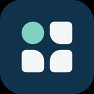
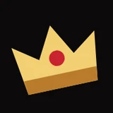

In homes and buildings
Smart-home products on Thread and Matter, smart buildings with indoor climate, energy and water under watch, plants and green walls, and the app that makes a building's systems understandable to the people living in it.
Innovating tomorrow, today
RazTech Innovations is a Swedish IoT product studio and consultancy, working with companies across Europe. We build connected products and apps of our own, and we help industry, cities and property owners turn sensors, real-time data and AI into services people trust.
These are our own products, designed and built by RazTech. Four are on the App Store today. The rest are on the way, and we say which. Work we do for clients is not shown here.
Real-time open data, made useful for the people moving through it.
Coming to the App Store
Sweden in real time. Buses, metro, trains and boats in 15 counties, queues and travel times on Stockholm's roads, road conditions, rain radar and disruptions on one map for iPhone, all of it drawn from open data.
In planning
Every vehicle in the household in one place: status, inspection and tax deadlines, and service history, with one tap to the right official e-service. An independent app for Swedish vehicle owners, planned for iPhone and Android.
Connected things that tell the truth about themselves, and look after what grows.
On the App Store
Your Thread network, measured. See which smart-home devices are on Thread, which border routers your network has, and when a device has really gone offline. For iPhone, iPad and Apple Watch. What it cannot read, it does not show.
In development
A smart planter that pairs Scandinavian ceramics with soil, light and temperature sensors. It waters the root zone in short, measured pulses instead of flooding the pot, so plants get what they need and less water is wasted. Designed in Stockholm.
Software for the people who organize care, with the rules built in and explained.

In development
One calm, clear place to run personal assistance in Sweden. Scheduling and staffing, decisions and approved hours, time reporting, and working-time rules that warn in context and explain themselves in plain language, in Swedish and English.
Games that respect the player's time, attention and wallet.
On the App Store
A cozy pixel-art puzzle about getting everyone home. 340 gardens in twenty-four worlds, a fresh puzzle every day and no timers. For iPhone and iPad, with today's puzzle playable in the browser.

On the App Store
A fantasy real-time strategy game for iPhone and iPad. Raise a village, forge a kingdom and march on your rival. Free to start, one purchase unlocks the full game, and there are no ads.
On the App Store
A calm pet and puzzle game for children aged 6 to 10. Hatch a Juno, look after it, and solve gentle puzzles that wake up a floating island. No ads, no tracking and no pressure, read aloud in 21 languages.
A connected product is a chain, and it is only as good as its weakest link. We work on every link ourselves: the sensor, the radio, the firmware, the cloud and the screen in someone's hand. In a home the chain ends at a plant or a lamp. In industry it ends at a pump, a meter or a production line, where a missed reading costs money.
The right sensor, placed where the truth is. GRODD reads soil moisture, light and temperature at the root, where watering decisions are made.
Thread, Matter, HomeKit and Wi-Fi. We measure the radio instead of trusting it: the ThreadMapper probe reads the Thread radio itself.
Firmware that acts on its own readings and is updated over the air. Our probe firmware is published with checksums, so anyone can verify what they flash.
Telemetry streamed, stored and turned into thresholds, alerts and history. GRODD adjusts each plant's watering from the data it sends.
A screen that says what is wrong and what to do first. ThreadMapper grades a network from A to F and lists the fixes with the evidence behind each.
Smart-home products on Thread and Matter, smart buildings with indoor climate, energy and water under watch, plants and green walls, and the app that makes a building's systems understandable to the people living in it.
The same chain at industrial scale: condition monitoring and predictive maintenance for machines and pumps, energy and water metering, asset tracking, and retrofits that bring older equipment online. Fleets of devices in the field are watched and updated remotely, with every alert tied to the reading behind it.
We work with European companies, in English and Swedish, and we build for European requirements: privacy by design under GDPR, security built for the Cyber Resilience Act and NIS2, data kept in the EU when a project calls for it, and security updates planned for a device's whole life.
We advise on the same things we build, for companies across Europe. You get a partner who can take an idea from a first conversation to a product in people's hands, and who knows where each step tends to go wrong.
Sweden publishes some of the best open data in the world. Most of it never reaches the person waiting for a bus or deciding whether to take the car. 360Maps is our answer: one map that brings a dozen public sources together and refreshes while you watch.
We bring the same approach to municipalities, transit agencies and property owners. Start with the data you already have, show it honestly, and build the service around the questions people ask every day.
We would rather show what our products do than make promises about the planet. These are the choices we make, and where you can check them.
360Maps plans a trip by car, public transport, bike or on foot against the traffic as it is right now. The alternatives to the car are always one tap away.
GRODD doses water in short pulses at the root zone, guided by a soil sensor, instead of soaking the whole pot on a timer. The plant gets what it needs and less water is wasted.
JUNO, Crownfall, ThreadMapper and 360Maps need no account. JUNO and 360Maps carry no ads and no tracking. Less data moved and stored is less energy spent.
ThreadMapper helps you find out why a device dropped off the network before you replace it. MyVehicles is planned around a service record that follows the car to its next owner.
This page is plain HTML and CSS with one font file. No cookies, no trackers, no analytics and nothing loaded from anyone else.
ThreadMapper shows no signal strength for Thread accessories, because iOS gives apps none to read. 360Maps names the source of everything on the map. If we cannot measure it, we do not draw it.
AssistanceCare warns about a working-time problem at the moment you can still fix it. JUNO and Pixel Home have no timers. Good software lowers the pulse of the person using it.
JUNO has no ads, no tracking and no account. Crownfall keeps your saves on your device. We collect what a feature needs to work, and say so in plain words.
JUNO reads every line aloud in 21 languages. Pixel Home marks every color with a symbol, so no puzzle depends on telling hues apart. Accessibility is part of the first design, not a later fix.
Tell us what you are trying to do, in a few lines, in Swedish or English. We answer every message.
Prefer your own mail app?
Email raztechsupport@icloud.com
Using one of our apps? Each product website has its own support and privacy pages, and the same address reaches us.